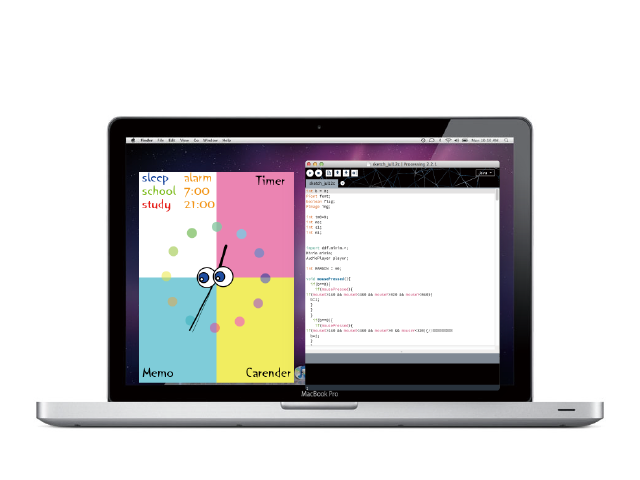

この作品は私の原点
この作品は私がプログラミングをして制作した初めての作品。慣れないプログラミングに、最初はとてもつまづいた。しかし、何回もエラーが出てそれを解除しての繰り返しをしていくうちに、どんどん力が付いた。そして、最終課題で出来上がったのは、この作品だ。
ソースコードが形になる楽しさを初めて感じた！
制作年度：１年次
科目：情報表現入門
使用言語：procerssing
彩り鮮やかな可愛いデザイン
今ある生活をよりカラフルにする。女子大生が使いたいと思うような可愛い色味で染めた。
生きているように見える時計
人の感情は顔の表情で読み取ることが多い。そこで目の色によって行動を示唆する機能性を持たせた。また、アナログ時計に目を付けることで、生きているように見える。
この作品は私がプログラミングをして制作した初めての作品。慣れないプログラミングに、最初はとてもつまづいた。しかし、何回もエラーが出てそれを解除しての繰り返しをしていくうちに、どんどん力が付いた。そして、最終課題で出来上がったのは、この作品だ。
ソースコードが形になる楽しさを初めて感じた！